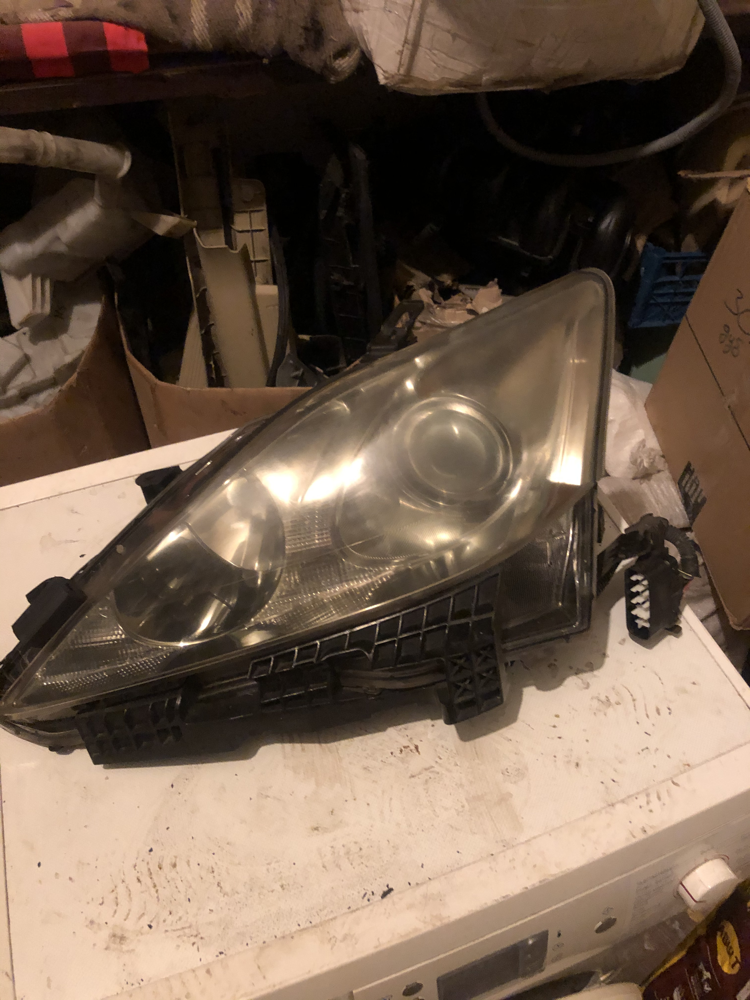
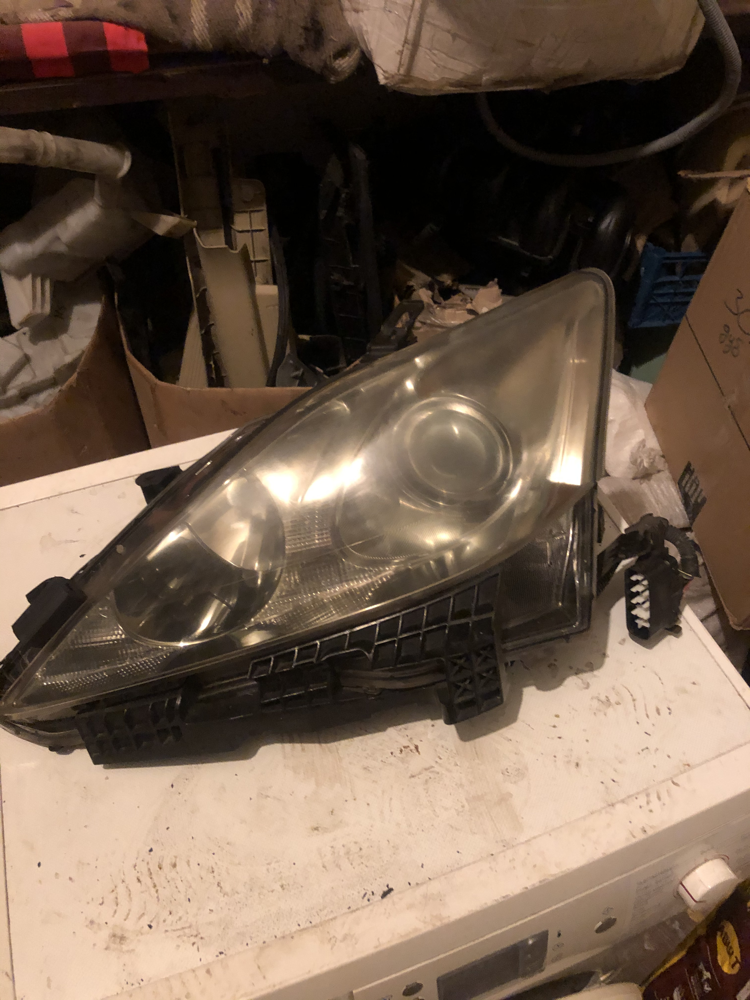

Запчастини для Lexus IS (XE20) 2005-2012
Пропонуємо широкий вибір оригінальних б/в запчастин для Lexus IS 250 та IS 220d другого покоління (2005-2012 р.в.). В наявності деталі двигуна, трансмісії, підвіски, кузова, оптика, електрика, салон та інше. Усі запчастини перевірені.

 

Оригінальні OEM Номери Запчастин та Орієнтовні Ціни (Lexus IS XE20, б/в)
Наведено приклади ОЕМ номерів та ДУЖЕ ПРИБЛИЗНИЙ діапазон цін в грн на популярні б/в запчастини для Lexus IS 2005-2012. Ціни сильно залежать від стану, постачальника та комплектації. Завжди уточнюйте актуальну ціну та сумісність за телефоном!
- 81145-53541 - Фара передня права (Xenon, AFS, приклад) | Ціна: ~3500 - 9000 грн
- 81185-53541 - Фара передня ліва (Xenon, AFS, приклад) | Ціна: ~3500 - 9000 грн
- 81110-53240 - Фара передня права (Галоген, приклад) | Ціна: ~2000 - 5000 грн
- 81150-53240 - Фара передня ліва (Галоген, приклад) | Ціна: ~2000 - 5000 грн
- 81551-53171 - Ліхтар задній правий (В крило, дорестайл) | Ціна: ~1200 - 3000 грн
- 81561-53171 - Ліхтар задній лівий (В крило, дорестайл) | Ціна: ~1200 - 3000 грн
- 81551-53230 - Ліхтар задній правий (В крило, рестайл LED) | Ціна: ~2000 - 5000 грн
- 81561-53230 - Ліхтар задній лівий (В крило, рестайл LED) | Ціна: ~2000 - 5000 грн
- 81581-53060 - Ліхтар задній правий (В кришку багажника) | Ціна: ~800 - 2000 грн
- 81591-53060 - Ліхтар задній лівий (В кришку багажника) | Ціна: ~800 - 2000 грн
- 81210-0D041 - Протитуманна фара права (ПТФ) | Ціна: ~700 - 1800 грн
- 81220-0D041 - Протитуманна фара ліва (ПТФ) | Ціна: ~700 - 1800 грн
- 81730-53020 - Повторювач повороту правий (В дзеркало) | Ціна: ~500 - 1200 грн
- 81740-53020 - Повторювач повороту лівий (В дзеркало) | Ціна: ~500 - 1200 грн
- 84912-53010 - Блок розпалу ксенону (Ballast) | Ціна: ~1000 - 2500 грн
- 52119-53913 - Бампер передній (дорестайл, під омивачі) | Ціна: ~2500 - 6000 грн
- 52119-53530 - Бампер передній (рестайл F-Sport, приклад) | Ціна: ~3500 - 8000 грн
- 52159-53907 - Бампер задній (дорестайл, під парктронік) | Ціна: ~2000 - 5000 грн
- 53801-53050 - Крило переднє праве | Ціна: ~1500 - 4000 грн
- 53802-53050 - Крило переднє ліве | Ціна: ~1500 - 4000 грн
- 53301-53030 - Капот | Ціна: ~3000 - 7000 грн
- 53101-53071 - Решітка радіатора (дорестайл, приклад) | Ціна: ~1000 - 2500 грн
- 53111-53120 - Решітка бампера нижня (дорестайл) | Ціна: ~500 - 1500 грн
- 67001-53070 - Двері передні праві (голі) | Ціна: ~2500 - 6000 грн
- 67002-53070 - Двері передні ліві (голі) | Ціна: ~2500 - 6000 грн
- 67003-53050 - Двері задні праві (голі) | Ціна: ~2000 - 5000 грн
- 67004-53050 - Двері задні ліві (голі) | Ціна: ~2000 - 5000 грн
- 64401-53090 - Кришка багажника | Ціна: ~2000 - 5000 грн
- 87910-53440 - Дзеркало бокове праве (комплектне, приклад) | Ціна: ~2000 - 5500 грн
- 87940-53440 - Дзеркало бокове ліве (комплектне, приклад) | Ціна: ~2000 - 5500 грн
- 75710-53030 - Молдинг двері передньої правої | Ціна: ~400 - 1000 грн
- 58910-53090 - Підлокітник центральний | Ціна: ~1000 - 2500 грн
- 53510-53021 - Замок капота | Ціна: ~500 - 1200 грн
- 51410-53010 - Захист двигуна (пластик, центр.) | Ціна: ~800 - 2000 грн
- 51441-53030 - Захист двигуна (пластик, правий) | Ціна: ~500 - 1500 грн
- 51442-53020 - Захист двигуна (пластик, лівий) | Ціна: ~500 - 1500 грн
- 52127-53030 - Кріплення бампера переднього праве | Ціна: ~200 - 600 грн
- 52128-53030 - Кріплення бампера переднього ліве | Ціна: ~200 - 600 грн
- 68111-53020 - Скло двері передньої правої | Ціна: ~800 - 2000 грн
- 48510-53150 - Амортизатор передній (Стійка) | Ціна: ~1200 - 3000 грн/шт
- 48530-53070 - Амортизатор задній (Стійка) | Ціна: ~1000 - 2500 грн/шт
- 48068-53020 - Важіль передній нижній правий | Ціна: ~1500 - 3500 грн
- 48069-53020 - Важіль передній нижній лівий | Ціна: ~1500 - 3500 грн
- 48610-53010 - Важіль передній верхній правий | Ціна: ~1000 - 2500 грн
- 48630-53010 - Важіль передній верхній лівий | Ціна: ~1000 - 2500 грн
- 48710-53010 - Важіль задній поздовжній | Ціна: ~700 - 1800 грн
- 48770-30100 - Важіль задній верхній (Camber) | Ціна: ~600 - 1500 грн
- 48730-53020 - Важіль задній нижній (Toe) | Ціна: ~500 - 1300 грн
- 48820-30090 - Стійка стабілізатора передня | Ціна: ~250 - 700 грн
- 48830-53010 - Стійка стабілізатора задня | Ціна: ~200 - 600 грн
- 48811-53060 - Стабілізатор поперечної стійкості передній | Ціна: ~800 - 2000 грн
- 43512-30310 - Диск гальмівний передній | Ціна: ~500 - 1500 грн/шт
- 42431-53020 - Диск гальмівний задній | Ціна: ~400 - 1200 грн/шт
- 47730-53040 - Супорт гальмівний передній правий | Ціна: ~1200 - 3000 грн
- 47750-53040 - Супорт гальмівний передній лівий | Ціна: ~1200 - 3000 грн
- 47830-53020 - Супорт гальмівний задній правий | Ціна: ~1000 - 2500 грн
- 47850-53020 - Супорт гальмівний задній лівий | Ціна: ~1000 - 2500 грн
- 43502-30211 - Ступиця передня (в зборі) | Ціна: ~1500 - 3500 грн
- 42410-30020 - Ступиця задня (в зборі) | Ціна: ~1300 - 3000 грн
- 45510-53011 - Рейка рульова (RWD) | Ціна: ~4000 - 10000 грн
- 44200-53111 - Рейка рульова (AWD) | Ціна: ~5000 - 12000 грн
- 45250-53130 - Вал рульовий карданний | Ціна: ~800 - 2000 грн
- 45100-53270-C0 - Кермо (Руль, шкіра) | Ціна: ~1500 - 4000 грн
- 42611-53120 - Диск колісний легкосплавний (R17, 1шт) | Ціна: ~1500 - 4000 грн
- 16400-31390 - Радіатор охолодження двигуна (IS250 AT) | Ціна: ~2000 - 5000 грн
- 16711-31200 - Вентилятор радіатора (в зборі) | Ціна: ~2500 - 5500 грн
- 16100-39456 - Насос охолоджуючої рідини (Помпа, IS250) | Ціна: ~800 - 2000 грн
- 16620-31021 - Натягувач ременя | Ціна: ~700 - 1800 грн
- 27060-31051 - Генератор (IS250) | Ціна: ~2000 - 4500 грн
- 28100-31081 - Стартер (IS250) | Ціна: ~1500 - 3500 грн
- 11201-31071 - Кришка клапанна права | Ціна: ~1000 - 2500 грн
- 17110-31150 - Колектор впускний | Ціна: ~1500 - 3500 грн
- 22030-31020 - Дросельна заслінка | Ціна: ~1200 - 3000 грн
- 15330-31020 - Клапан VVT-i | Ціна: ~600 - 1500 грн
- 90919-A1002 - Котушка запалювання | Ціна: ~400 - 1000 грн/шт
- 23209-31050 - Форсунка паливна (IS250) | Ціна: ~800 - 2000 грн/шт
- 77020-53061 - Насос паливний в зборі | Ціна: ~1500 - 4000 грн
- 17410-31470 - Колектор випускний з каталізатором правий | Ціна: ~3000 - 8000 грн
- 17420-31170 - Колектор випускний з каталізатором лівий | Ціна: ~3000 - 8000 грн
- 17430-31350 - Глушник задній | Ціна: ~1500 - 4000 грн
- 89467-30010 - Датчик кисню (Лямбда, верхній) | Ціна: ~1000 - 2500 грн
- 89465-30730 - Датчик кисню (Лямбда, нижній) | Ціна: ~800 - 2000 грн
- 22204-31020 - Датчик масової витрати повітря (MAF) | Ціна: ~1000 - 2500 грн
- 89615-20090 - Датчик детонації | Ціна: ~400 - 1000 грн
- 89422-30030 - Датчик температури ОР | Ціна: ~200 - 600 грн
- 89542-53030 - Датчик ABS передній правий | Ціна: ~700 - 1800 грн
- 89545-30070 - Датчик ABS задній правий | Ціна: ~600 - 1500 грн
- 84306-53030 - Шлейф керма | Ціна: ~800 - 2500 грн
- 89661-53732 - Блок управління двигуном (ECU) | Ціна: ~2500 - 7000 грн
- 89540-53230 - Блок управління ABS/VSC | Ціна: ~2000 - 6000 грн
- 88460-53050 - Радіатор кондиціонера | Ціна: ~1500 - 3500 грн
- 88310-53051 - Компресор кондиціонера | Ціна: ~2500 - 6000 грн
- 87103-53100 - Мотор пічки | Ціна: ~1000 - 2500 грн
- 55900-53250 - Блок управління клімат-контролем | Ціна: ~800 - 2000 грн
- 86120-53350 - Магнітола / Головний пристрій | Ціна: ~1500 - 4000 грн
- 69801-53020 - Склопідйомник передній правий (механізм) | Ціна: ~800 - 2000 грн
- 84820-33230 - Блок кнопок склопідйомників (водійський) | Ціна: ~700 - 1800 грн
- 55405-53120 - Накладка панелі приладів центральна | Ціна: ~500 - 1500 грн
Запчастини для Mazda 5 (CR) 2005-2009
Великий вибір оригінальних б/в автозапчастин для Mazda 5 першого покоління (2005-2009 р.в.). Завжди в наявності та під замовлення деталі кузова, двигуна, ходової частини, оптика, деталі салону та електрика. Допоможемо підібрати потрібну деталь.
Оригінальні OEM Номери Запчастин та Орієнтовні Ціни (Mazda 5 CR, б/в)
Приклади ОЕМ номерів та ДУЖЕ ПРИБЛИЗНИЙ діапазон цін в грн на популярні б/в запчастини для Mazda 5 (2005-2009). Ціни сильно залежать від стану, двигуна та комплектації. Завжди уточнюйте актуальну ціну та сумісність за телефоном!
- C235-51-0L0F - Фара передня ліва | Ціна: ~1500 - 4000 грн
- C235-51-0K0F - Фара передня права | Ціна: ~1500 - 4000 грн
- CC29-51-3G0B - Протитуманна фара ліва (ПТФ) | Ціна: ~500 - 1200 грн
- CC29-51-3F0B - Протитуманна фара права (ПТФ) | Ціна: ~500 - 1200 грн
- C235-51-160F - Ліхтар задній лівий (в крило) | Ціна: ~1000 - 2500 грн
- C235-51-150F - Ліхтар задній правий (в крило) | Ціна: ~1000 - 2500 грн
- C235-51-3G0A - Ліхтар задній лівий (в кришку багажника) | Ціна: ~600 - 1500 грн
- C235-51-3F0A - Ліхтар задній правий (в кришку багажника) | Ціна: ~600 - 1500 грн
- BBM4-51-274C - Повторювач повороту (на крилі) | Ціна: ~150 - 400 грн
- C236-50-0T1E - Бампер передній | Ціна: ~2000 - 5000 грн
- C236-50-221E - Бампер задній | Ціна: ~1500 - 4000 грн
- C235-52-211A - Крило переднє ліве | Ціна: ~1200 - 3000 грн
- C235-52-111A - Крило переднє праве | Ціна: ~1200 - 3000 грн
- C235-52-61XB - Капот | Ціна: ~2500 - 6000 грн
- C235-50-710J - Решітка радіатора (верхня) | Ціна: ~700 - 1800 грн
- C236-50-1T1C - Решітка бампера переднього (нижня) | Ціна: ~400 - 1000 грн
- C235-59-02XG - Двері передні ліві (голі) | Ціна: ~2000 - 5000 грн
- C235-58-02XG - Двері передні праві (голі) | Ціна: ~2000 - 5000 грн
- C235-73-02XF - Двері задні ліві (зсувні, голі) | Ціна: ~2500 - 6000 грн
- C235-72-02XF - Двері задні праві (зсувні, голі) | Ціна: ~2500 - 6000 грн
- C235-62-02XJ - Кришка багажника (Ляда) | Ціна: ~2000 - 5000 грн
- C243-68-940H-02 - Ручка двері зовнішня | Ціна: ~300 - 800 грн
- C235-72-410C - Ролик дверей зсувних (середній) | Ціна: ~500 - 1200 грн
- C235-72-280B - Механізм замка зсувних дверей | Ціна: ~800 - 2000 грн
- BPYK-69-18Z - Дзеркало бокове ліве (комплектне, приклад) | Ціна: ~1200 - 3000 грн
- BPYK-69-12Z - Дзеркало бокове праве (комплектне, приклад) | Ціна: ~1200 - 3000 грн
- C235-56-82XA - Замок капота | Ціна: ~400 - 1000 грн
- C235-56-620B - Амортизатор (упор) капота | Ціна: ~200 - 500 грн
- C235-62-620D - Амортизатор (упор) кришки багажника | Ціна: ~250 - 600 грн
- C235-56-1AXA - Підкрилок передній лівий | Ціна: ~400 - 1000 грн
- C235-56-1BXB - Підкрилок передній правий | Ціна: ~400 - 1000 грн
- C235-50-7J0B - Кронштейн бампера | Ціна: ~150 - 400 грн
- C235-68-300B - Обшивка двері | Ціна: ~500 - 1200 грн
- BP4K-34-700L - Амортизатор передній (Стійка) | Ціна: ~800 - 2000 грн/шт
- BP4K-28-700E - Амортизатор задній (Стійка) | Ціна: ~700 - 1800 грн/шт
- BP4K-34-350H - Важіль передній нижній лівий | Ціна: ~1000 - 2500 грн
- BP4K-34-300H - Важіль передній нижній правий | Ціна: ~1000 - 2500 грн
- BP4K-28-500C - Важіль задній поперечний (верхній) | Ціна: ~400 - 1000 грн
- C236-28-300B - Важіль задній поздовжній | Ціна: ~600 - 1500 грн
- B32H-28-450A - Важіль задній (розвал/сходження) | Ціна: ~300 - 800 грн
- BBM2-34-170 - Стійка стабілізатора передня | Ціна: ~150 - 400 грн
- BP4K-28-170D - Стійка стабілізатора задня | Ціна: ~150 - 400 грн
- BBM2-34-151A - Втулка стабілізатора переднього | Ціна: ~50 - 150 грн
- BP4K-28-156C - Втулка стабілізатора заднього | Ціна: ~50 - 150 грн
- BP4K-34-156 - Подушка (опора) амортизатора переднього | Ціна: ~300 - 800 грн
- BP4L-28-340A - Подушка (опора) амортизатора заднього | Ціна: ~250 - 700 грн
- BP4K-34-380C - Кульова опора (Шаровая) | Ціна: ~200 - 500 грн
- BBP3-33-047A - Підшипник ступиці передній | Ціна: ~400 - 1000 грн
- BBM2-26-15XA - Підшипник ступиці задній (ступиця в зборі) | Ціна: ~1000 - 2500 грн
- C236-32-110G - Рейка рульова | Ціна: ~3000 - 7000 грн
- BP4L-32-12X - Наконечник рульової тяги | Ціна: ~150 - 400 грн
- BP4L-32-24X - Тяга рульова | Ціна: ~200 - 500 грн
- CC29-32-600D - Насос гідропідсилювача керма (ГУР) | Ціна: ~1500 - 3500 грн
- BBM2-33-25XA - Диск гальмівний передній | Ціна: ~400 - 1000 грн/шт
- C24Y-26-25XA - Диск гальмівний задній | Ціна: ~350 - 900 грн/шт
- BBM6-33-28ZA - Супорт гальмівний передній правий | Ціна: ~1000 - 2500 грн
- BBM6-33-29ZA - Супорт гальмівний передній лівий | Ціна: ~1000 - 2500 грн
- C2Y6-26-99ZA - Супорт гальмівний задній правий | Ціна: ~800 - 2000 грн
- C2Y6-26-98ZA - Супорт гальмівний задній лівий | Ціна: ~800 - 2000 грн
- L327-15-200H - Радіатор охолодження двигуна | Ціна: ~1500 - 3500 грн
- LFH1-15-025G - Вентилятор радіатора (в зборі) | Ціна: ~1800 - 4000 грн
- LF50-15-170 - Термостат | Ціна: ~200 - 500 грн
- L327-15-100A - Насос охолоджуючої рідини (Помпа) | Ціна: ~600 - 1500 грн
- LF50-15-980C - Натягувач ременя | Ціна: ~500 - 1200 грн
- LFH1-18-300 - Генератор | Ціна: ~1800 - 4000 грн
- L327-18-400 - Стартер | Ціна: ~1200 - 3000 грн
- BBM4-67-5G0B - Мотор склоочисника | Ціна: ~600 - 1500 грн
- LFBL-18-100 - Котушка запалювання | Ціна: ~300 - 800 грн/шт
- L3G2-13-100 - Колектор впускний | Ціна: ~1000 - 2500 грн
- L3K9-13-640 - Дросельна заслінка | Ціна: ~1000 - 2500 грн
- BPY1-39-06XF - Подушка двигуна (права) | Ціна: ~800 - 2000 грн
- BP4N-39-070D - Подушка двигуна (ліва/КПП) | Ціна: ~600 - 1500 грн
- BP4K-39-080E - Подушка двигуна (задня) | Ціна: ~400 - 1000 грн
- L327-13-35XG - Насос паливний в зборі | Ціна: ~1200 - 3000 грн
- LF66-13-250 - Форсунка паливна | Ціна: ~500 - 1200 грн/шт
- LF67-18-8G1B - Датчик кисню (Лямбда, передній) | Ціна: ~800 - 2000 грн
- L327-18-861B - Датчик кисню (Лямбда, задній) | Ціна: ~700 - 1800 грн
- LFB7-20-55X - Каталізатор (частина) | Ціна: ~2000 - 6000 грн
- LFE2-40-100D - Глушник задній | Ціна: ~1000 - 2500 грн
- LFH1-18-881A - Датчик масової витрати повітря (MAF) | Ціна: ~800 - 2000 грн
- LF01-18-211 - Датчик положення колінвала | Ціна: ~400 - 1000 грн
- L3G2-18-230 - Датчик положення розподільного вала | Ціна: ~350 - 900 грн
- LF01-18-741 - Датчик температури ОР | Ціна: ~150 - 400 грн
- BBM2-43-70XC - Датчик ABS передній правий | Ціна: ~600 - 1500 грн
- C235-43-71YB - Датчик ABS задній правий | Ціна: ~500 - 1300 грн
- CC29-66-350 - Блок кнопок склопідйомників (водійський) | Ціна: ~600 - 1500 грн
- C235-59-350L - Склопідйомник передній лівий (механізм) | Ціна: ~700 - 1800 грн
- TD11-67-330 - Моторчик омивача | Ціна: ~150 - 400 грн
- CC29-61-190A - Мотор пічки | Ціна: ~800 - 2000 грн
- BBM4-66-CS0 - Шлейф керма | Ціна: ~700 - 1800 грн
- LFDK-18-881F - Блок управління двигуном (ECU, приклад) | Ціна: ~2000 - 5000 грн
- C236-55-210B - Панель приладів (Щиток) | Ціна: ~1000 - 2500 грн
- C236-66-9RX - Магнітола (приклад) | Ціна: ~800 - 2000 грн
- CC43-61-195A - Блок управління кліматом | Ціна: ~700 - 1500 грн